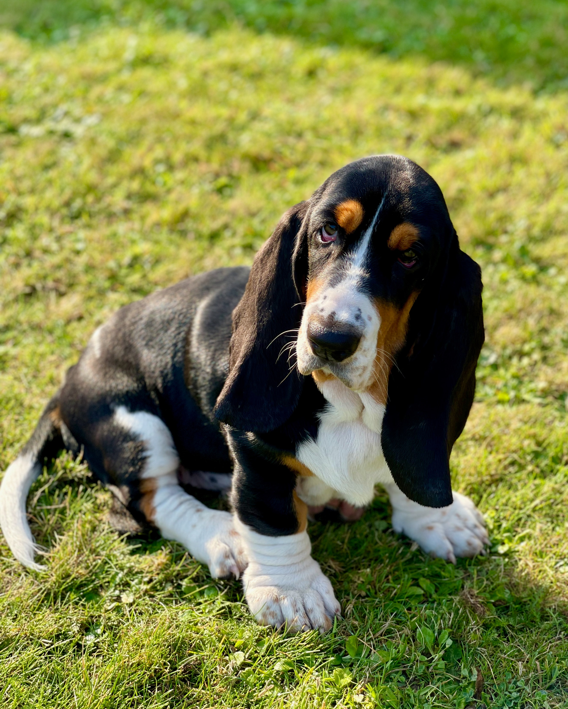
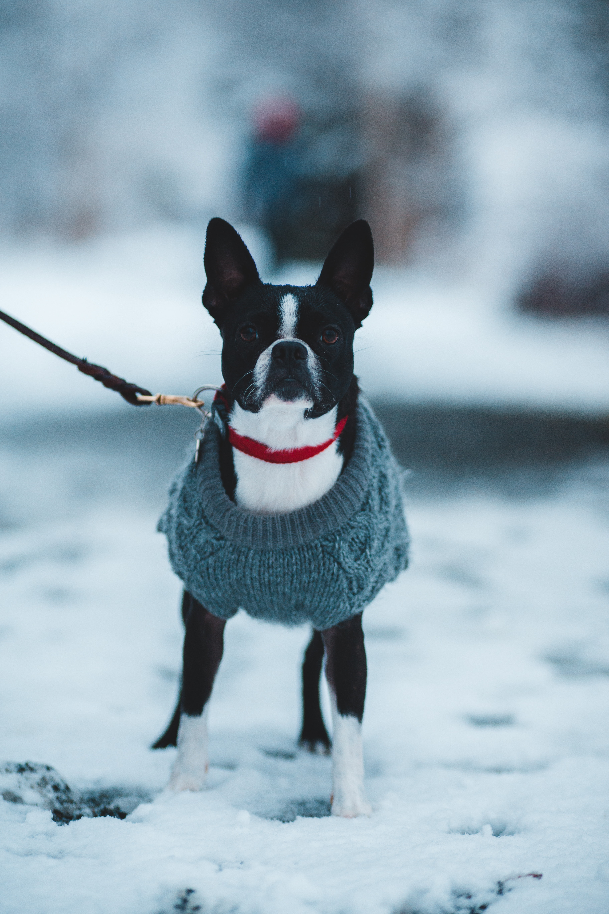

Recommended Dog Breeds for College Students
Basset Hound
Basset Hounds are very low energy dogs which are perfect for college students who live in apartments. They are very outgoing and friendly as well.
Shih Tzus
Shih Tzus are also very good for students who live in apartments. They require moderate excersice, so they're good motivation to stay active and can handle alone time.

Boston Terrier
Boston Terriers are very tidy pets. They have minimal amounts of shedding and drooling making them good for students in dorms and apartments. They are also very easy to train. 